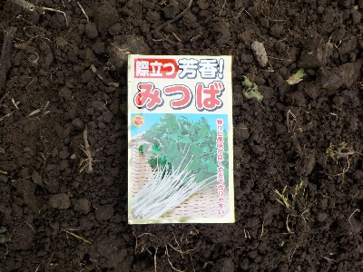
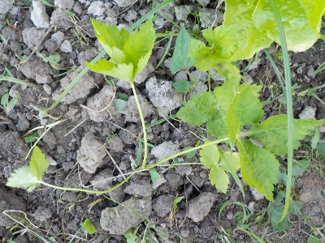
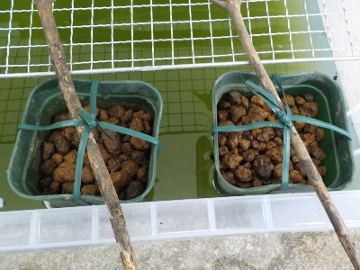

畑に畝を作って三つ葉の種蒔きをしました。タネがいっぱい余った。
更新日 : 2026/03/14

昔は自宅の果樹の下らへんに自生していたので春によく食べてたんですが、いつのまにかなくなってしまいました。草刈りの仕方がまずかったかな。
建物の横で昼から暗い場所に種蒔きしました。そんなに沢山タネを蒔くつもりはなかったですが、1袋に沢山タネが入っていたので多めにまきました。
それでもタネが余ったので、来年も再来年も種蒔きできそうです。
順調に育てば大量に食べれそうです。
でもこの写真の三つ葉は茎が白いな。なんだこれ？日に当てずに育てたのかな？それともこんな種類なの？
三つ葉が順調に育っていません。
更新日 : 2026/06/12

発芽も少ないし発芽後に雑草やサンチュの苗に負けてジワジワと減少中です。三つ葉は強いイメージがあったんですが、弱かったです。園芸品種のせいかな？
タネはまだ沢山あるので蒔いてもいいですが、これから暑くなるので水やりを考えると蒔く気がしないです。
秋か来年の春に再挑戦かな。
三つ葉のタネを蒔いた鉢をメダカのタンクに浸けました。
更新日 : 2026/08/15

メダカのタンクに水草を入れようと検討しました。色々な種類の植物を考えた結果、タネを持ってる三つ葉にしました。
野生の草だと大きくなり過ぎたり、量が増えたら嫌ですよね。タネが落ちて雑草が増えるのも嫌です。
三つ葉なら畑に植え替えしてもいいし、食べてもいいので都合が良さそうです。
鉢を水没させると育たないので、ぶら下げて底が水に浸かるようにしました。育てば水質浄化にも効果があるんじゃないかな。